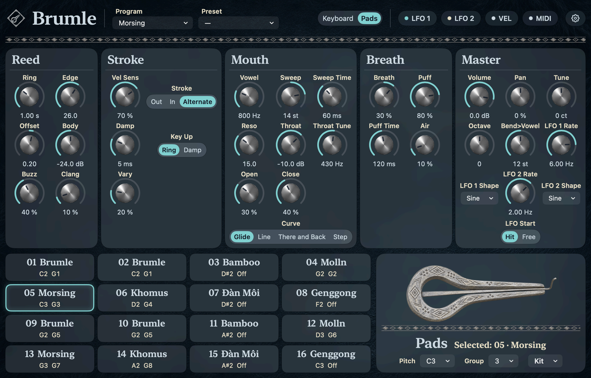
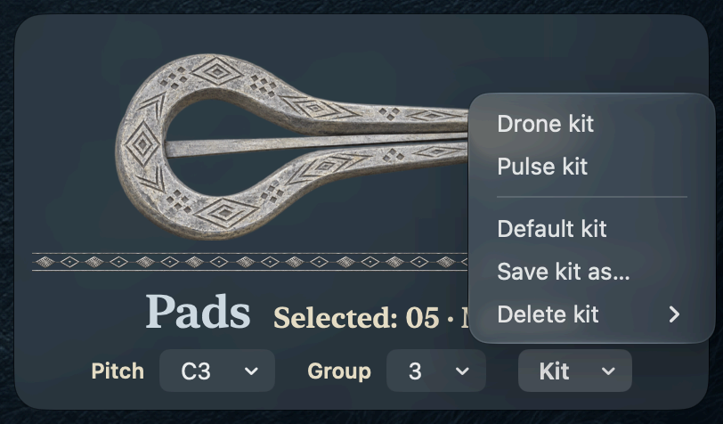
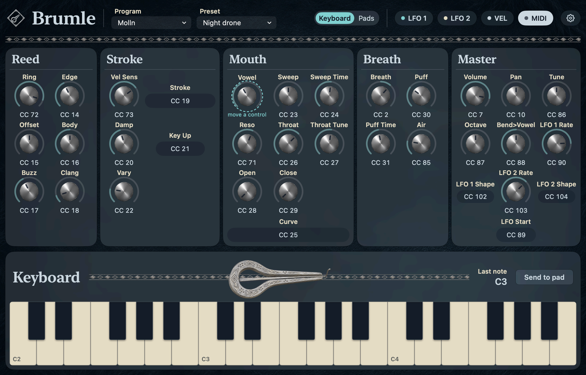

Začínáme
- Stáhněte obraz disku ze stránky ke stažení a otevřete ho.
- Přetáhněte Fanfrnoch do složky Aplikace a spusťte ji odtamtud.
- Klikněte na klávesu klaviatury ve spodní části okna. U horního okraje klávesy je úder slabý, níž je silnější. Hrát můžete i z MIDI klaviatury: aplikace poslouchá všechna připojená MIDI zařízení, dokud si nevyberete jedno.
- Zvuk jde do výstupu nastaveného v macOS. Jiné zařízení, nebo jedno MIDI zařízení či kanál, vyberete po kliknutí na ozubené kolečko vpravo v hlavičce (Settings; viz Nastavení).
- Chcete-li Fanfrnoch hrát v hostitelském programu, jako je Logic Pro nebo Ableton Live, otevřete Settings a klikněte na Install Audio Unit (viz Plugin Audio Unit).
Aplikace si zvuk pamatuje mezi spuštěními: knoby klaviatury, všech šestnáct padů, režim, vybraný pad i preset, ze kterého každý zvuk pochází. Pamatuje si také vaše MIDI ovladače (viz MIDI ovladače).
Hlavní okno

- 1Program
- Načte do knobů jeden ze sedmi vestavěných zvuků (viz Hlavička).
- 2Preset
- Vaše vlastní zvuky uložené jako soubory: jeden načtete do knobů, knoby uložíte jako nový, nebo jeden smažete (viz Presety).
- 3Keyboard | Pads
- Režim: klávesy hrají jeden zvuk ve své výšce, nebo noty 36–51 rozeznívají šestnáct padů, z nichž každý má vlastní zvuk (viz Režim klaviatury a Režim padů).
- 4LFO 1, LFO 2, VEL
- Promění knoby v míry, o které jimi hýbe LFO nebo síla úderu (viz Míry LFO a VEL).
- 5MIDI
- Ukáže, který MIDI ovladač hýbe kterým knobem a přepínačem, a nechá je naučit se nové (viz MIDI ovladače).
- 6Settings
- MIDI vstup, zvukový výstup a instalace pluginu Audio Unit. Má je jen aplikace.
- 7Reed, Stroke, Mouth, Breath, Master
- Knoby a přepínače zvuku v pěti skupinách (viz Knoby a přepínače). V režimu klaviatury ukazují zvuk klaviatury, v režimu padů zvuk vybraného padu.
- 8Last note
- Poslední nota zahraná v režimu klaviatury; než nějaká zazní, je to C2. Tuto výšku dá padu tlačítko Send to pad.
- 9Send to pad
- Zkopíruje zvuk klaviatury do jednoho z padů (viz Send to pad).
- 10Klaviatura
- Tři oktávy, C2 až B4 (H4). Kliknutím na klávesu ji zahrajete: u horního okraje klávesy má úder sílu (velocity) 40, u spodního 127. Přetažením myši na jinou klávesu se ta nezahraje. V režimu padů jsou na tomto místě pady.
Hlavička
- Program
- Sedm vestavěných programů. Program nastaví všechny knoby, přepínače i míry zvuku, který knoby právě ukazují, kromě Octave: v režimu klaviatury zvuk klaviatury, v režimu padů zvuk vybraného padu. Program, který se právě používá, je zaškrtnutý.
- Fanfrnoch: výchozí hodnoty, dlouhé znění, po každém brnknutí stoupá Vowel.
- Molln: alpská fanfrnoch, dlouhé klidné znění s ústy bez pohybu.
- Khomus: jakutský chomus, bzučivý, ústa se pomalu pohnou tam a zpět.
- Morsing: krátký indický morsing, rychlé brnknutí s výdechem a zavírajícími se ústy.
- Đàn Môi: vietnamská fanfrnoch, brnká se jen ven, ústa otevřená a vzdušná.
- Bamboo: tenký, jasný, zvonivý bambusový jazýček.
- Genggong: indonéský genggong, krátký a zvonivý, ústa dokořán.
- Preset
- Vaše presety, zvuky, které jste si uložili. Stejně jako Program působí na zvuk, který právě ukazují knoby. V názvu nabídky je preset, ze kterého tento zvuk pochází, nebo „—“ (viz Presety).
- Keyboard | Pads
- Přepíná mezi oběma režimy. Není to nastavení zvuku: přepnutím se žádný zvuk nezmění.
- LFO 1, LFO 2, VEL
- Z těchto tří tlačítek a tlačítka MIDI může být zapnuté vždy jen jedno. Dokud je zapnuté jedno z těchto tří, nastavují knoby míry tohoto zdroje; dalším kliknutím se vrátíte ke knobům (viz Míry LFO a VEL).
- MIDI
- Dokud je zapnuté, ukazuje každý knob a přepínač zvuku klaviatury místo své hodnoty svůj MIDI ovladač a po kliknutí se naučí nový; dalším kliknutím na MIDI se hodnoty vrátí (viz MIDI ovladače). Nabídka tlačítka po kliknutí pravým tlačítkem vrátí všem prvkům jejich standardní ovladač.
- Settings (ozubené kolečko)
- Otevře nastavení. Okno pluginu kolečko nemá: MIDI i zvuk tam obstarává hostitelský program.
Když preset nebo sadu nejde uložit, načíst ani smazat, například protože jeho soubor někdo smazal ve Finderu nebo je poškozený, objeví se pod nabídkami Program a Preset na čtyři sekundy jednořádková zpráva. Nic jiného se nezmění.
Knoby a přepínače
Knob 1 má nad sebou název a pod sebou hodnotu; tyrkysový oblouk ukazuje, kde stojí. Táhněte knob nahoru nebo dolů: 200 bodů tažení ho otočí z jednoho konce na druhý. S klávesou Shift jsou kroky desetkrát jemnější. Dvojklik vrátí knob na hodnotu z presetu, ze kterého zvuk pochází, a bez presetu na hodnotu naposledy načteného programu. Přepínač 2 ukazuje své volby vedle sebe; klikněte na jednu z nich. Tvary LFO mají voleb víc, proto jsou to nabídky.
Rozsahy a výchozí hodnoty níže jsou hodnoty programu Fanfrnoch.
Reed
Kovový jazýček a to, jak naráží na rámeček.
- Ring (0,3–15 s, výchozí 4 s)
- Jak dlouho jazýček po brnknutí zní: čas, za který zeslábne o 60 dB.
- Edge (3–40, výchozí 18)
- Jak ostře hrot jazýčku míjí rámeček. Vyšší hodnoty sahají výš mezi harmonické a znějí jasněji a tvrději.
- Offset (−2 až +2, výchozí +0,2)
- Jak daleko od středu mezery jazýček sedí. Čím dál od nuly, tím silnější jsou sudé harmonické.
- Body (−48 až 0 dB, výchozí −24 dB)
- Hlasitost vlastního tónu jazýčku, základního tónu, pod brnknutím.
- Buzz (0–100 %, výchozí 40 %)
- Syrové bzučení jazýčku, který míjí rámeček, přimíchané vedle rezonancí úst. Víc Buzz zní syrověji; méně nechá promluvit ústa.
- Clang (0–100 %, výchozí 10 %)
- Kovové zazvonění na začátku silného brnknutí, které odezní během několika desítek milisekund.
Stroke
Jak prst jazýček rozezní a jak ho zastaví.
- Vel Sens (0–100 %, výchozí 70 %)
- Jak moc síla úderu mění samotné brnknutí. Slabší úder rozkmitá jazýček méně, o 1 − Vel Sens × (1 − síla úderu), a s ním i výdech, takže zní tišeji, tmavěji a méně dýchavě. Na nule je každý úder stejně silný jako ten nejsilnější.
- Stroke (Out, In, Alternate; výchozí Alternate)
- Směr brnknutí. Alternate střídá směr od jednoho brnknutí k dalšímu: v režimu klaviatury pro každou notu zvlášť, v režimu padů pro každou skupinu umlčení (viz Režim padů).
- Damp (2–80 ms, výchozí 10 ms)
- Jak rychle se znějící jazýček zastaví: čas, za který zeslábne o 40 dB. Jazýček se zastaví, když jeho nota zazní znovu, když zazní pad z jeho skupiny umlčení a při Key Up = Damp.
- Key Up (Ring, Damp; výchozí Ring)
- Co udělá puštění klávesy nebo padu. Ring nechá jazýček doznít; Damp ho zastaví za čas Damp.
- Vary (0–100 %, výchozí 20 %)
- Náhodný rozdíl mezi jedním brnknutím a dalším, protože ruka nikdy nebrnkne dvakrát stejně. Na 100 % se síla brnknutí liší až o 15 %, Offset až o 0,3, Vowel až o 3 půltóny a Sweep Time až o 20 %.
Mouth
Ústa hráče, která vybírají alikvóty, jež zpívají. Jejich pohyb dělá melodii fanfrnoch.
- Vowel (500–3300 Hz, výchozí 800 Hz)
- Kde stojí rezonance úst v okamžiku brnknutí: zazpívá alikvóta poblíž této frekvence. Hýbe jí kolečko pitch bend (viz Režim klaviatury).
- Sweep (−24 až +24 st, výchozí +14 st)
- O kolik půltónů ústa po každém brnknutí posunou Vowel; záporné hodnoty ho posunou dolů.
- Sweep Time (10–2000 ms, výchozí 160 ms)
- Jak dlouho ten pohyb trvá.
- Curve (Glide, Line, There and Back, Step; výchozí Glide)
- Průběh pohybu. Glide se nejdřív pohne rychle a pak jemně dosedne; Line jde stejným tempem; There and Back se během Sweep Time pohne a vrátí tam, kde začal; Step skočí v polovině.
- Reso (4–40, výchozí 15)
- Jak ostrá je rezonance úst (její Q). Vysoké hodnoty vyberou užší pásmo, takže zpívající alikvóta víc vynikne.
- Throat (−30 až 0 dB, výchozí −10 dB)
- Hlasitost rezonance hrdla, druhého, nižšího pásma vedle pásma Vowel.
- Throat Tune (250–700 Hz, výchozí 430 Hz)
- Kde rezonance hrdla stojí.
- Open (0–100 %, výchozí 30 %)
- Jak otevřené jsou rty. Otevřenější zní jasněji a pásmo hrdla se rozšíří a posune výš.
- Close (0–100 %, výchozí 0 %)
- Jak moc se rty zavřou: na 100 % je rezonance Vowel uzavřená. Přidává k němu modulační kolečko.
Breath
Vzduch, který proudí nástrojem a který jazýček rozsekává na nárazy.
- Breath (−100 až +100 %, výchozí +30 %)
- Stálý dech mezerou, dokud jazýček zní. Záporné hodnoty vzduch nasávají, což mění barvu bzučení. Přidává k němu aftertouch.
- Puff (0–100 %, výchozí 30 %)
- Náraz dechu, který přijde s každým brnknutím. Slabší úder vydechne méně, podle Vel Sens.
- Puff Time (20–1000 ms, výchozí 120 ms)
- Jak dlouho ten náraz trvá.
- Air (0–100 %, výchozí 10 %)
- Syčení vzduchu v mezeře. Slábne spolu s jazýčkem.
Master
- Volume (−40 až +6 dB, výchozí 0 dB)
- Hlasitost zvuku. Programy jsou vyvážené na 0 dB.
- Pan (−100 až +100 %, výchozí 0)
- Vlevo nebo vpravo ve stereu. Hodí se k rozestavění padů.
- Tune (−100 až +100 ct, výchozí 0)
- Jemné doladění v centech.
- Octave (−2 až +2, výchozí 0)
- Posune zvuk o oktávy. Na nule zní nota ve své výšce: C2 (nota 36) má 65,4 Hz. Programy tento knob nechávají, kde je.
- Bend>Vowel (0–24 st, výchozí 12 st)
- O kolik kolečko pitch bend posune Vowel: na koncích kolečka o tolik půltónů nahoru nebo dolů.
- LFO 1 Rate, LFO 2 Rate (0,02–20 Hz, výchozí 6 Hz a 2 Hz)
- Jak často každé LFO oběhne svůj cyklus. Čím LFO hýbe a o kolik, se nastavuje přímo na knobech (viz Míry LFO a VEL).
- LFO 1 Shape, LFO 2 Shape (Sine, Triangle, Ramp Up, Ramp Down, Square, Steps, Wander; výchozí Sine)
- Tvar cyklu každého LFO. Sine a Triangle se houpou; rampy stoupají nebo klesají a skočí zpět; Square přepíná mezi dvěma polohami; Steps si každý cyklus vezme novou náhodnou polohu a drží ji; Wander si ji vezme a plynule se k ní přesune.
- LFO Start (Hit, Free; výchozí Hit)
- Hit spustí obě LFO s každým úderem znovu, takže při stejném úderu se knoby pohnou pokaždé stejně. Free je nechá běžet dál a každý úder se k nim připojí tam, kde právě jsou.
Režim klaviatury
Každá MIDI nota i každá klávesa na obrazovce hraje zvuk klaviatury ve výšce noty. Právě tento zvuk v tomto režimu ukazují knoby.
- Jeden hlas na notu. Když nota zazní znovu, zastaví svůj vlastní znějící jazýček (za jeho čas Damp) a brnkne znovu. Různé noty znějí přes sebe.
- Znějící nota sleduje knoby: otočíte jedním a změnu hned slyšíte. Výjimkou jsou Ring, Vel Sens, Stroke, Vary, Tune a Octave; ty platí až od dalšího úderu.
- Najednou zní nejvýš šestnáct hlasů, pady včetně. Sedmnáctý úder během několika milisekund umlčí nejtišší hlas.
- Síla úderu (velocity)
- Tvaruje brnknutí podle Vel Sens a hýbe knoby, které mají míru VEL (viz Míry LFO a VEL).
- Pitch bend
- Hýbe knobem Vowel, ne výškou tónu: až o Bend>Vowel půltónů na obě strany.
- Modulační kolečko (CC 1)
- Zavírá rty: přidá až celou dráhu knobu Close.
- Aftertouch (channel pressure)
- Přidá dech: až polovinu dráhy knobu Breath.
Kolečka působí jen na zvuk klaviatury; znějící pady je nesledují. Reset All Controllers (CC 121) vrátí všechna tři do klidu a All Notes Off (CC 123) zastaví každý hlas za jeho čas Damp.
Ostatní MIDI ovladače otáčejí přímo knoby a přepínači (viz MIDI ovladače).
Režim padů

V režimu padů 5 rozeznívají MIDI noty 36–51 (C2–D♯3) pady 1–16: nota 36 je pad 1, nota 37 pad 2 a tak dál, jako na MPC nebo v Drum Racku Abletonu. Ostatní noty se ignorují. Každý pad má vlastní zvuk, zmrazený s ním, a hraje ho ve vlastní výšce, ať ho rozezní kterákoli nota.
- 1Pady
- Pad 1 je vlevo nahoře a pady pokračují po řádcích. Každý ukazuje číslo a název, pod nimi výšku a skupinu umlčení („C2 G1“; „Off“, když žádnou nemá). Název padu je název presetu, ze kterého jeho zvuk pochází, a bez presetu název jeho programu. Pad se při úderu rozsvítí, ať přijde z obrazovky, nebo z MIDI.
- 2Výběr a hraní padu
- Kliknutím pad zahrajete a vyberete; vybraný pad má tyrkysový obrys. Stejně jako u kláves je úder u horního okraje slabý a níž silnější. Pad zůstane držený, dokud nepustíte tlačítko myši, což má význam při Key Up = Damp.
- Úpravy padu
- Knoby ukazují zvuk vybraného padu a otáčení jimi mění jen tento pad. 4 Program i Preset se načtou do vybraného padu. Zvuk klaviatury i ostatní pady zůstanou, jak byly.
- 3Výška a skupina
- Vedle padů: který pad je vybraný, jeho výška a skupina umlčení (viz níže) a nabídka Kit (viz Sady).
Úder na pad použije zvuk padu tak, jak byl v okamžiku úderu: otočení knobem změní až další úder, ne ten, který zní. Pady znějí přes sebe, pokud je nezastaví jejich skupina.
Výška a skupina

- 1Selected
- Číslo a název vybraného padu.
- 2Pitch
- Nota, kterou pad hraje, od C-1 do G9, vybíraná v podnabídkách po oktávách. Octave a Tune padu platí i nadále.
- 3Group
- Skupina umlčení padu: Off nebo 1–16. Výška a skupina patří padu, ne jeho zvuku: načtení programu ani presetu je nezmění.
- 4Kit
- Načítá, ukládá a maže sady: všech šestnáct padů najednou (viz Sady).
Skupiny umlčení
Skupiny umlčení fungují jako na MPC. Úder zastaví znějící jazýčky všech padů ze své skupiny bez ohledu na jejich výšku a vždy i předchozí úder vlastního padu. Pad se skupinou Off zastaví jen sám sebe, takže dva takové pady ve stejné výšce znějí přes sebe. Každý zastavený jazýček utichne za svůj vlastní čas Damp.
Při Stroke = Alternate se směr střídá v rámci skupiny: pady jedné skupiny brnkají na střídačku jako jedna fanfrnoch. Pad se skupinou Off střídá směr sám pro sebe.
Výchozí sada
Při prvním spuštění a v každé nové instanci pluginu mají pady tuto sadu; Kit › Default kit ji vrátí. Pady 1 a 2 jsou jedna fanfrnoch, druhý zní krátce; pady 9–16 opakují pady 1–8 o kvintu výš a ze skupin 1–4 jsou 5–8.
| Pad | Program | Nota | Skupina |
|---|---|---|---|
| 01 | Fanfrnoch | C2 (36) | 1 |
| 02 | Fanfrnoch, Ring 0,6 s | C2 (36) | 1 |
| 03 | Bamboo | D♯2 (39) | Off |
| 04 | Molln | G2 (43) | 2 |
| 05 | Morsing | C3 (48) | 3 |
| 06 | Khomus | D2 (38) | 4 |
| 07 | Đàn Môi | D♯2 (39) | Off |
| 08 | Genggong | F2 (41) | Off |
| 09 | Fanfrnoch | G2 (43) | 5 |
| 10 | Fanfrnoch, Ring 0,6 s | G2 (43) | 5 |
| 11 | Bamboo | A♯2 (46) | Off |
| 12 | Molln | D3 (50) | 6 |
| 13 | Morsing | G3 (55) | 7 |
| 14 | Khomus | A2 (45) | 8 |
| 15 | Đàn Môi | A♯2 (46) | Off |
| 16 | Genggong | C3 (48) | Off |
Send to pad

Send to pad udělá ze zvuku vyladěného na klaviatuře pad.
- V režimu klaviatury nastavte zvuk a zahrajte notu, kterou má pad dostat. Ukazuje ji Last note vedle tlačítka.
- Klikněte na Send to pad. Objeví se šestnáct padů s názvy a výškami.
- Klikněte na pad, který chcete nahradit 1. Fanfrnoch se zeptá 2, jestli ho opravdu nahradit, a uvede pad i výšku.
- Kliknutím na Replace (nebo klávesou Return) zvuk zkopírujete; Cancel (nebo Esc) pad nechá, jak byl.
Pad převezme všechny knoby, přepínače a míry zvuku klaviatury, jeho program, preset, ze kterého zvuk pochází (pokud nějaký), a jako výšku poslední zahranou notu (C2, pokud žádná nezazněla). Svou skupinu si ponechá.
Presety
Preset je jeden zvuk uložený jako soubor: program, ze kterého vyšel, a všechny knoby, přepínače a míry včetně Octave. Můžete ho načíst do klaviatury nebo do kteréhokoli padu, kolikrát chcete. Výška a skupina padu jeho součástí nejsou.

- 1Nabídka Preset
- V hlavičce vedle Programu. V jejím názvu je preset, ze kterého pochází zvuk, jejž ukazují knoby, nebo „—“. Nabídka se při každém otevření podívá do složky, takže v ní najdete i preset, který právě uložil plugin v hostitelském programu nebo který jste do složky zkopírovali.
- 2Načtení presetu
- Kliknutím načtete preset do zvuku, který ukazují knoby: v režimu klaviatury do zvuku klaviatury, v režimu padů do vybraného padu. Ostatní zvuky zůstanou, jak byly. Používaný preset je zaškrtnutý.
- 3Save as…
- Uloží zvuk, který ukazují knoby, jako preset (viz Uložení presetu).
- 4Delete
- Podnabídka vašich presetů. Fanfrnoch se zeptá „Delete “Night drone”? It goes to the Trash.“: Delete přesune soubor do koše, Cancel (nebo Return či Esc) ho ponechá. Zvuk, který ze smazaného presetu pochází, si své knoby ponechá.
Uložení presetu

- Nastavte zvuk a zvolte Preset › Save as….
- Napište název 1. Pole začíná názvem používaného presetu, pokud nějaký je. Pod ním Fanfrnoch uvádí, co se uloží 2.
- Klikněte na Save 3 nebo stiskněte Return. Cancel nebo Esc nic neuloží.
Název může mít nejvýš 60 znaků. Mezery na jeho koncích se vynechají a „/“ a „:“ se změní na „-“. Pokud preset s tímto názvem už existuje (na velikosti písmen nezáleží), Fanfrnoch se zeptá „Replace “Night drone”?“: Replace ho přepíše, Cancel vás vrátí k názvu. Zvuky, které pocházejí ze staré verze, si ponechají své knoby, ale dvojklik už knob vrátí na hodnotu z nové verze.
Používaný preset
Každý zvuk, zvuk klaviatury i zvuk každého padu, si pamatuje preset, ze kterého pochází. Ukazuje to název nabídky a zaškrtnutí, pad ukazuje jeho název a dvojklik vrátí knob na hodnotu z presetu. Otáčení knoby tuto vazbu nezruší. Zruší ji načtení programu a název nabídky pak znovu ukazuje „—“; stejně tak smazání souboru presetu, po kterém dvojklik vrací knob na hodnotu programu.
Kde jsou presety uložené
Každý preset je soubor pojmenovaný podle něj, s příponou .fanfrnoch, ve složce ~/Library/Application Support/Fanfrnoch/Presets. Aplikace i plugin používají stejnou složku, takže preset uložený v jednom je v nabídce i toho druhého. Soubory můžete zkopírovat na jiný Mac nebo je přejmenovat ve Finderu. Fanfrnoch složku vytvoří, až uložíte první preset.
Sady
Sada (kit) je všech šestnáct padů uložených v jednom souboru: zvuk, výška a skupina umlčení každého padu a preset, ze kterého každý zvuk pochází. Načtení sady nahradí všech šestnáct padů najednou; zvuk klaviatury i režim zůstanou, jak byly.

- 1Kit
- Nabídka vedle padů v režimu padů. Žádná sada není zaškrtnutá: po načtení se pady sady upravují každý zvlášť.
- 2Vaše sady
- Kliknutím sadu načtete do padů. Pad, jehož preset ve složce Presets stále je, se s ním znovu propojí.
- 3Default kit
- Vrátí sadu, se kterou Fanfrnoch začíná (viz Výchozí sada).
- 4Save kit as…
- Uloží šestnáct padů jako sadu. Pojmenování funguje stejně jako u presetu (viz Uložení presetu).
- 5Delete kit
- Podnabídka vašich sad. Po potvrzení jde soubor sady do koše.
Sady jsou soubory s příponou .fanfrnochkit ve složce ~/Library/Application Support/Fanfrnoch/Kits, které aplikace i plugin sdílejí stejně jako presety.
Míry LFO a VEL
Knoby za vás mohou hýbat dvě LFO a síla každého úderu. Každý knob, kterým mohou hýbat, má pro každý z těchto zdrojů svou míru: o kolik jím zdroj pohne, jako část dráhy knobu, od −100 do +100 %. Míry patří ke zvuku stejně jako knoby, takže každý pad má své vlastní. Ve všech programech začínají na nule.

- Nastavení míry
- Klikněte v hlavičce na 1 LFO 1, LFO 2 nebo VEL; tlačítko se rozsvítí svou barvou (LFO 1 tyrkysovou, LFO 2 kostěnou, VEL stříbrnou). Knoby teď pod sebou ukazují míry tohoto zdroje 2: tažením nahoru nastavíte kladnou míru, dolů zápornou. Míra do 1 % od nuly je nula. Dvojklik vrátí míru knobu na 0. Dalším kliknutím na tlačítko se vrátíte ke knobům.
- Jak je to vidět
- Knob, kterým některý zdroj hýbe, má uvnitř oblouku hodnoty tenký oblouk v barvě zdroje 3, i když jsou tlačítka vypnutá, takže hned vidíte, co se hýbe. Ukazatel knobu zůstává tam, kam jste ho dali.
- Co ustoupí
- Knoby a přepínače, kterými zdroj hýbat nemůže, jsou při zapnutém tlačítku ztlumené 4.
LFO
LFO houpe knobem na obě strany od místa, kde stojí, o svou míru z dráhy knobu, a nikdy za konce jeho dráhy. Záporná míra pohyb obrátí. Jedním knobem mohou hýbat obě LFO; jejich pohyby se sčítají. Rychlosti, tvary a start LFO jsou ve skupině Master; při LFO Start = Hit si každý hlas spouští vlastní LFO se svým úderem.
LFO mohou hýbat knoby Vowel, Close, Breath, Open, Reso, Throat, Buzz, Body, Volume, Edge a Offset.
VEL

Knob stojí tam, kam ho dá úder plnou silou. Slabší úder ho posune o díl dráhy rovný míra × (1 − síla úderu), kde síla úderu jde od 0 do 1 (MIDI 127 je 1). Kladná míra znamená „čím silnější úder, tím vyšší hodnota“: s mírou Ring +40 % postaví úder poloviční silou knob Ring o 20 % jeho dráhy níž, takže slabé údery znějí kratší dobu. Záporná míra funguje obráceně. Síla úderu je pro celý úder pevná; pohyby LFO se k ní přičítají.
Výjimkou je Volume. Jeho míra VEL místo toho násobí zesílení číslem 1 − míra × (1 − síla úderu): klasická závislost hlasitosti na síle úderu. Na +100 % dostane úder poloviční silou poloviční zesílení (−6 dB), navíc k tomu, co s brnknutím udělá Vel Sens; na 0 % mění síla úderu hlasitost jen přes Vel Sens.
Síla úderu může hýbat knoby Ring, Damp, Edge, Offset, Body, Buzz, Clang, Vary, Vowel, Sweep, Sweep Time, Reso, Throat, Throat Tune, Open, Close, Breath, Puff, Puff Time, Air, Volume, Pan, Tune, LFO 1 Rate a LFO 2 Rate. Přepínače, Octave, Bend>Vowel a Vel Sens míru VEL nemají: Vel Sens řídí samotné brnknutí.
MIDI ovladače
Každý knob a přepínač zvuku klaviatury může sledovat MIDI ovladač (CC): knob, fader nebo pedál vaší MIDI klaviatury či kontroléru. Každý má svůj standardní ovladač (viz tabulka níže), takže kontrolér, který posílá tato čísla, funguje hned, a kterýkoli z nich se může naučit jiný.

- 1Zobrazení ovladačů
- Klikněte v hlavičce na MIDI; tlačítko se rozsvítí stříbrně. Každý knob pod sebou místo hodnoty ukazuje svůj ovladač 2 a každý přepínač ho ukazuje místo svých voleb 3: „CC 72“, nebo „—“, když žádný nemá. Dalším kliknutím na MIDI se hodnoty vrátí.
- 4Naučení ovladače
- Klikněte na knob nebo přepínač: objeví se čárkovaný kruh a nápis „move a control“. Pohněte knobem nebo faderem kontroléru: prvek si vezme první ovladač, který se pohne, a nastaví se tam, kde tento ovladač stojí. Dalším kliknutím na prvek naslouchání ukončíte; ukončí ho i vypnutí MIDI, změna režimu, přepnutí do jiné aplikace nebo zavření okna.
- Standardní ovladač
- Dvojklik vrátí knobu nebo přepínači jeho standardní ovladač.
- Nabídka po kliknutí pravým tlačítkem
- Klikněte na knob nebo přepínač se stisknutou klávesou Control (nebo dvěma prsty): No controller mu ovladač odebere, Back to CC 72 (s jeho standardním číslem) mu vrátí standardní. Every control back to its standard controller v této nabídce i v nabídce tlačítka MIDI vrátí standardní ovladače všem.
- Jeden ovladač hýbe jedním prvkem. Ovladač, který se naučí jeden prvek, se odebere prvku, který ho měl dosud.
- Ovladač nastaví svůj prvek podle své hodnoty: 0 je začátek dráhy, 127 její konec. U knobu, jehož střed je nula (Offset, Sweep, Breath, Pan, Tune, Octave), je 64 přesně uprostřed. Přepínač rozloží své volby po rozsahu 0–127.
- Ovladače fungují na všech MIDI kanálech; aplikace je přijímá na kanálech zvolených v nastavení.
- Ovladače hýbou zvukem klaviatury, i v režimu padů. Pady ani míry LFO a VEL ovladače nemají, proto jsou při zapnutém MIDI v režimu padů prvky ztlumené a ukazují „—“.
- Znějící nota sleduje ovladač stejně jako otočení knobem (viz Režim klaviatury), od svého dalšího řídicího kroku, o pár milisekund později.
- Ovladače patří aplikaci nebo pluginu, ne zvuku: načtení programu, presetu ani sady je nezmění. Aplikace je má ve svém nastavení, takže po novém spuštění zůstanou. Plugin je ukládá s projektem hostitelského programu, každá instance své.
- V pluginu se knob, kterým pohne ovladač, ohlásí hostitelskému programu, jako byste jím otočili vy.
Standardní ovladače
Kde General MIDI dává ovladači význam, který se hodí, prvek ho dostane: Volume 7, Pan 10, Vowel 74 (jas), Reso 71 (barva), Ring 72 (doznívání), Breath 2 (dechový ovladač) a Vel Sens 73 (náběh). Ostatní dostanou čísla, která MIDI nechává bez významu.
| Prvek | CC | Prvek | CC |
|---|---|---|---|
| Ring | 72 | Throat Tune | 27 |
| Edge | 14 | Open | 28 |
| Offset | 15 | Close | 29 |
| Body | 16 | Breath | 2 |
| Buzz | 17 | Puff | 30 |
| Clang | 18 | Puff Time | 31 |
| Vel Sens | 73 | Air | 85 |
| Stroke | 19 | Volume | 7 |
| Damp | 20 | Pan | 10 |
| Key Up | 21 | Tune | 86 |
| Vary | 22 | Octave | 87 |
| Vowel | 74 | Bend>Vowel | 88 |
| Sweep | 23 | LFO Start | 89 |
| Sweep Time | 24 | LFO 1 Rate | 90 |
| Curve | 25 | LFO 1 Shape | 102 |
| Reso | 71 | LFO 2 Rate | 103 |
| Throat | 26 | LFO 2 Shape | 104 |
Vyhrazené ovladače. CC 0–1, 6, 32, 38, 64, 96–101 a 120–127 si ponechávají svůj význam v MIDI (výběr banky, zadávání dat, sustain, čísla parametrů a zprávy kanálu). Žádný prvek je nedostane a učení je přeskakuje. CC 1 je modulační kolečko, které hýbe knobem Close (viz Režim klaviatury); CC 121 vrátí kolečka do klidu a CC 120 a 123 zastaví všechny hlasy.
Volné k naučení, bez významu v Brumli: CC 3–5, 8, 9, 11–13, 33–37, 39–63, 65–70, 75–84, 91–95 a 105–119.
Nastavení
Otevře je ozubené kolečko v hlavičce. Patří aplikaci; plugin bere MIDI i zvuk od hostitelského programu.
- MIDI input › Device
- All devices (výchozí, všechna zařízení), None (žádné), nebo jedna připojená klaviatura či kontrolér. Vybrané zařízení, které odpojíte, zůstane v seznamu s poznámkou „not connected“; jakmile ho znovu připojíte, aplikace ho začne zase poslouchat.
- MIDI input › Channel
- All channels (všechny kanály) nebo jeden z kanálů 1–16; zprávy na ostatních kanálech se ignorují.
- MIDI port „Fanfrnoch“
- Dokud aplikace běží, mohou jiné aplikace posílat MIDI do portu Fanfrnoch. Řídí se nastavením kanálu.
- Audio output › Device
- System default (výchozí výstup systému) nebo konkrétní zvukové zařízení. System default sleduje výstup zvolený v macOS. Vybrané zařízení, které odpojíte, zůstane v seznamu s poznámkou „not connected“ a zvuk jde do výchozího výstupu systému, dokud ho znovu nepřipojíte.
- Audio output › Channels
- Zobrazí se u zařízení se čtyřmi a více výstupy: dvojice kanálů, do které jde stereofonní zvuk.
- Audio Unit plug-in
- Ukazuje, jestli je plugin nainstalovaný a v jaké verzi; Install Audio Unit ho nainstaluje nebo aktualizuje.
Plugin Audio Unit
- V aplikaci otevřete Settings a klikněte na Install Audio Unit. Soubor Fanfrnoch.component se zkopíruje do ~/Library/Audio/Plug-Ins/Components.
- Restartujte hostitelský program nebo ho nechte znovu prohledat pluginy.
- Nástroj se objeví jako Fanfrnoch od výrobce Jiri Pisa mezi nástroji Audio Unit.
Okno pluginu je okno aplikace bez ozubeného kolečka: stejná hlavička, knoby, klaviatura, pady i Send to pad. Klávesy a pady na obrazovce hrají přímo na plugin.
- Automatizace
- Hostitelský program vidí 81 parametrů: zvuk klaviatury, tedy jeho 34 knobů a přepínačů, 22 měr LFO a 25 měr VEL. Otáčení knobem v režimu klaviatury lze nahrát jako automatizaci a automatizace hýbe knoby. Pady, jejich výšky a skupiny ani režim parametry nejsou: automatizace dosáhne jen na zvuk klaviatury.
- Presety
- Sedm programů jsou tovární presety pluginu; načítají se do zvuku klaviatury. Vaše vlastní presety jsou v nabídce Preset v okně pluginu, společné s aplikací (viz Presety). Když jeden načtete do klaviatury, ukáže hostitelský program jeho název jako preset pluginu; volba továrního presetu v hostitelském programu tuto vazbu zruší.
- Uloženo s projektem
- Zvuk klaviatury a jeho program, režim, všech šestnáct padů (zvuk, výška a skupina), preset, ze kterého každý zvuk pochází, MIDI ovladače a vybraný pad. Úprava padu označí projekt jako změněný půl sekundy poté, co přestanete, nebo když okno zavřete. Okno pluginu se otevře na naposledy vybraném padu. Projekt uložený starší verzí se otevře se standardními ovladači a vybraným padem 01.
- Latence
- Pod 88,2 kHz počítá Fanfrnoch hlasy na dvojnásobné frekvenci hostitele, což zvuk zpozdí o 29 vzorků (0,6 ms při 48 kHz). Plugin to hostitelskému programu hlásí a ten zpoždění vyrovná. Od 88,2 kHz výš je latence nulová.
- Výstup
- Stereo. Na monofonní stopě plugin smíchá obě strany do jedné, takže i pady posunuté úplně doprava jsou slyšet.
Po aktualizaci aplikace klikněte na Install Audio Unit znovu, aby se aktualizoval i plugin.
Aktualizace
Při každém spuštění se Fanfrnoch podívá, jestli existuje novější verze, a pokud ano, nabídne ji; bez vašeho souhlasu se nic nenainstaluje. Fanfrnoch › Check for Updates… se zeptá hned.